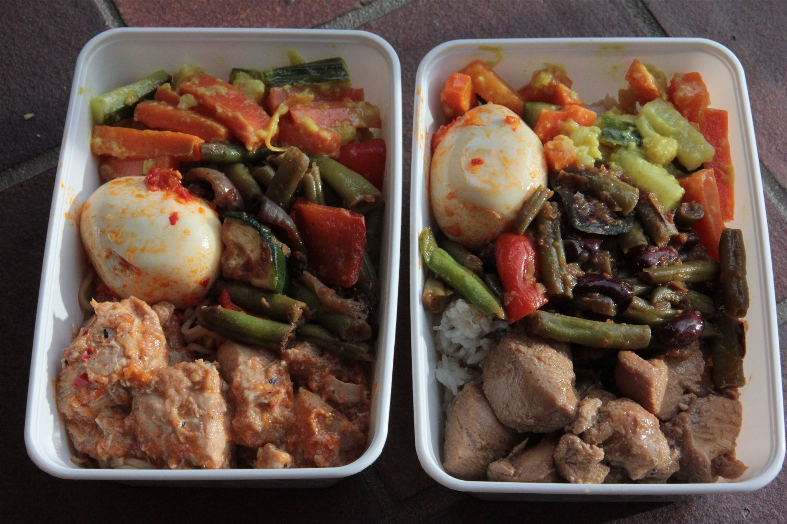
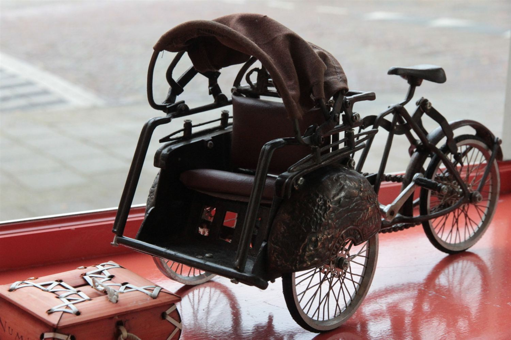
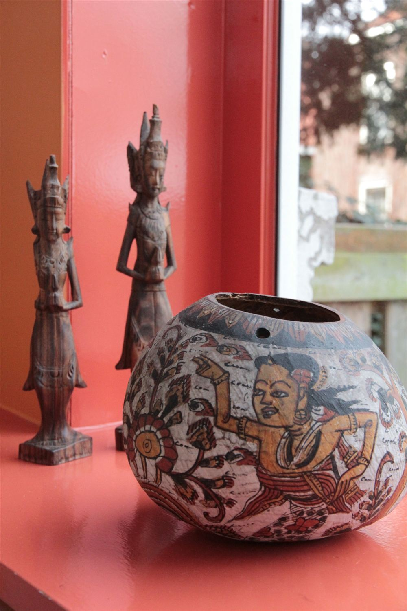

Menu Semarang
€ 26 per persoon
- Nasi of bami
- Ei (telor)
- Groenten (sajoer), 1 soort
- Vlees (daging), 3 soorten
- Kroepoek
- Atjar
- Borden en bestek
Toko Semarang by Tante Fitri
Kies een schotel of stel zelf uw maaltijd samen. Bestel telefonisch, via WhatsApp of per e-mail en haal het op aan de Hooglandseweg-Zuid.

Afhalen
Dinsdag t/m zondag
16.00 – 20.00 uur
Maandag gesloten
Hooglandseweg-Zuid 14
3813 TC Amersfoort
Snacks graag één dag van tevoren bestellen, telefonisch of per e-mail. Er is geen minimale afname.

Toko Semarang verzorgt al jaren de catering voor allerlei gelegenheden. Verras uw gasten met een heerlijk en authentiek Indonesisch buffet, voor gelegenheden vanaf 15 tot wel 300 gasten. In overleg passen we de catering natuurlijk aan uw wensen aan.
Elk jaar verzorgt Toko Semarang de catering voor de 300 gasten van ‘Mari Dansa’, een Indisch dans-kerstfeest in Amersfoort.
Bel ons gerust voor de mogelijkheden en een prijsopgave; bellen heeft onze voorkeur boven e-mail. Bel 06 84810248

De geheime ingrediënten in de heerlijke Indonesische gerechten van Toko Semarang zijn natuurlijk de mensen. Samen zorgen zij voor de hoge kwaliteit en service die de klanten gewend zijn van Toko Semarang.
Fitri Chandra is de nieuwe eigenaresse van Toko Semarang in Amersfoort. Binnenkort vertelt zij hier meer over zichzelf.
Eigenaar & Indonesisch kok
Fitri kent alle ins & outs van de Indonesische keuken. Ze zorgt ook voor planning en aansturing.
Winkelbediening
Wennie zorgt voor de winkelbediening in Toko Semarang. Altijd service met een glimlach!
| Maandag | gesloten |
|---|---|
| Dinsdag t/m zondag | 16.00 – 20.00 uur |
| Privé catering, 27 oktober | gesloten |
|---|---|
| 1e Kerstdag, 25 december | gesloten |
| 2e Kerstdag, 26 december | 16.00 – 20.00 uur |
| Oudejaarsavond, 31 december | 12.00 – 19.00 uur |
| Nieuwjaarsdag, 1 januari 2027 | gesloten |
Toko Semarang
Hooglandseweg-Zuid 14, 3813 TC Amersfoort
Alleen afhalen
Geef uw bestelling door via WhatsApp, met het formulier of per e-mail. Vermeld graag uw telefoonnummer, dan kunnen we contact met u opnemen als er iets onduidelijk is. Ook voor een cateringaanvraag.